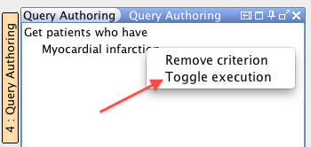

SNOMED CT, Java and MySQL are registered trademarks
The section describes how to temporarily exclude a query criterion from being used to generate query results. This is generally useful to compare results by toggling one of many query criteria in a given query. See Execution State for more information.
-
Right Click on target query expression in Query Authoring Panel for which
execution state needs to be changed.
This brings up the Query Creation Popup Menu as shown in the figure
below.

-
Click 'Toggle Execution' in the Query Creation Popup Menu as shown below.
This results in the 'Execution State' of the selected query expression being toggled. For example, if the previous Execution State of the expression was 'EXECUTE' then it will be set to 'SKIP' when the 'Toggle Execution' is clicked.

Tip: Within the user interface, all query expressions that have their Execution State set to SKIP will be displayed in a 'strike through' style.